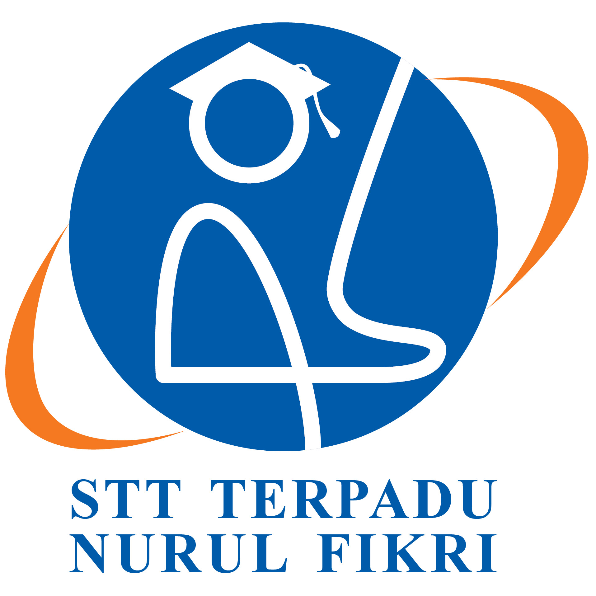

 Tonggak sejarah STT-NF bisa dilacak Tahun 1985, tatkala berdiri Yayasan Nurul Fikri dengan unit bisnis Bimbingan dan Konsultasi Belajar (BKB). Selanjutnya, dibentuk divisi pendidikan komputer pada Tahun 1994 dengan nama Nurul Fikri Computer & Statistics (NCS) atau disebut juga NF Computer. Sejak Tahun 1998 NF Computer mulai menyelenggarakan Pelatihan Linux dan Open Source pertama di Indonesia. Tonggak sejarah STT-NF bisa dilacak Tahun 1985, tatkala berdiri Yayasan Nurul Fikri dengan unit bisnis Bimbingan dan Konsultasi Belajar (BKB). Selanjutnya, dibentuk divisi pendidikan komputer pada Tahun 1994 dengan nama Nurul Fikri Computer & Statistics (NCS) atau disebut juga NF Computer. Sejak Tahun 1998 NF Computer mulai menyelenggarakan Pelatihan Linux dan Open Source pertama di Indonesia. Tonggak sejarah STT-NF bisa dilacak Tahun 1985, tatkala berdiri Yayasan Nurul Fikri dengan unit bisnis Bimbingan dan Konsultasi Belajar (BKB). Selanjutnya, dibentuk divisi pendidikan komputer pada Tahun 1994 dengan nama Nurul Fikri Computer & Statistics (NCS) atau disebut juga NF Computer. Sejak Tahun 1998 NF Computer mulai menyelenggarakan Pelatihan Linux dan Open Source pertama di Indonesia. Tonggak sejarah STT-NF bisa dilacak Tahun 1985, tatkala berdiri Yayasan Nurul Fikri dengan unit bisnis Bimbingan dan Konsultasi Belajar (BKB). Selanjutnya, dibentuk divisi pendidikan komputer pada Tahun 1994 dengan nama Nurul Fikri Computer & Statistics (NCS) atau disebut juga NF Computer. Sejak Tahun 1998 NF Computer mulai menyelenggarakan Pelatihan Linux dan Open Source pertama di Indonesia.
Sejak Tahun 2000, NF Computer menjadi independen dan bertransformasi jadi Lembaga Pendidikan Komputer (LPK) Nurul Fikri. Kemudian berganti nama menjadi LP3T Nurul Fikri, yang menyelenggarakan pelatihan komputer dan pendidikan setara D1 dan D2. Semua program itu terakreditasi pada BAN-PNF Kementerian Pendidikan dan Kebudayaan, berdasarkan SK Nomor KOM/3276 00006/ 09/ 2009. Sejak Tahun 2000, NF Computer menjadi independen dan bertransformasi jadi Lembaga Pendidikan Komputer (LPK) Nurul Fikri. Kemudian berganti nama menjadi LP3T Nurul Fikri, yang menyelenggarakan pelatihan komputer dan pendidikan setara D1 dan D2. Semua program itu terakreditasi pada BAN-PNF Kementerian Pendidikan dan Kebudayaan, berdasarkan SK Nomor KOM/3276 00006/ 09/ 2009. Sejak Tahun 2000, NF Computer menjadi independen dan bertransformasi jadi Lembaga Pendidikan Komputer (LPK) Nurul Fikri. Kemudian berganti nama menjadi LP3T Nurul Fikri, yang menyelenggarakan pelatihan komputer dan pendidikan setara D1 dan D2. Semua program itu terakreditasi pada BAN-PNF Kementerian Pendidikan dan Kebudayaan, berdasarkan SK Nomor KOM/3276 00006/ 09/ 2009. Sejak Tahun 2000, NF Computer menjadi independen dan bertransformasi jadi Lembaga Pendidikan Komputer (LPK) Nurul Fikri. Kemudian berganti nama menjadi LP3T Nurul Fikri, yang menyelenggarakan pelatihan komputer dan pendidikan setara D1 dan D2. Semua program itu terakreditasi pada BAN-PNF Kementerian Pendidikan dan Kebudayaan, berdasarkan SK Nomor KOM/3276 00006/ 09/ 2009.
Sekolah Tinggi Teknologi Terpadu Nurul Fikri (populer disebut STT-NF) merupakan perguruan tinggi yang memadukan keilmuan praktis di bidang teknologi informasi dengan pengembangan kepribadian islami, kompeten dan berkarakter. Pada tahun 2012, STT-NF resmi berdiri berdasarkan SK Menteri Pendidikan dan Kebudayaan Nomor 269/E/O/2012. Sekolah Tinggi Teknologi Terpadu Nurul Fikri (populer disebut STT-NF) merupakan perguruan tinggi yang memadukan keilmuan praktis di bidang teknologi informasi dengan pengembangan kepribadian islami, kompeten dan berkarakter. Pada tahun 2012, STT-NF resmi berdiri berdasarkan SK Menteri Pendidikan dan Kebudayaan Nomor 269/E/O/2012. Sekolah Tinggi Teknologi Terpadu Nurul Fikri (populer disebut STT-NF) merupakan perguruan tinggi yang memadukan keilmuan praktis di bidang teknologi informasi dengan pengembangan kepribadian islami, kompeten dan berkarakter. Pada tahun 2012, STT-NF resmi berdiri berdasarkan SK Menteri Pendidikan dan Kebudayaan Nomor 269/E/O/2012. Sekolah Tinggi Teknologi Terpadu Nurul Fikri (populer disebut STT-NF) merupakan perguruan tinggi yang memadukan keilmuan praktis di bidang teknologi informasi dengan pengembangan kepribadian islami, kompeten dan berkarakter. Pada tahun 2012, STT-NF resmi berdiri berdasarkan SK Menteri Pendidikan dan Kebudayaan Nomor 269/E/O/2012.
Design By: ©Nasrul ™STT-NF 2021
Back To Top